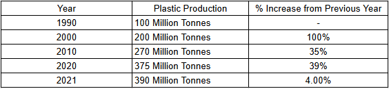
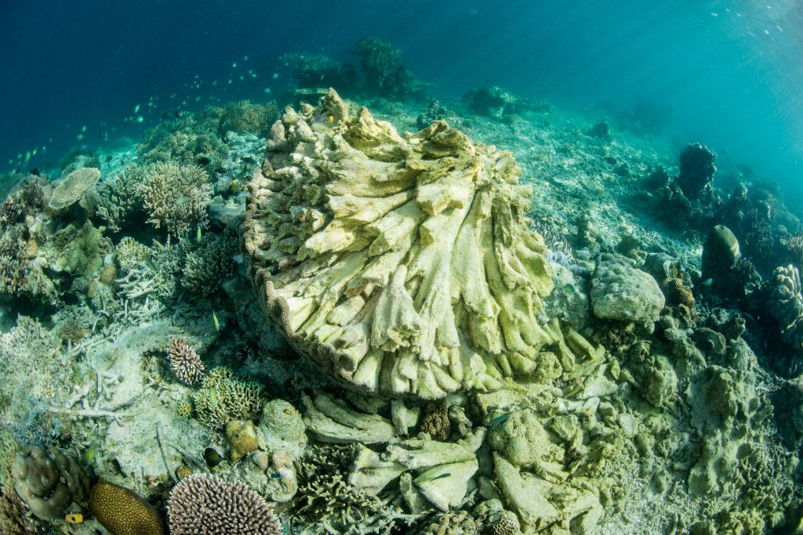

Over the years, marine pollution has been an issue that has been getting worse with no signs of slowing down. Our advocacy focuses on sustainable usage of the ocean and marine resources for sustainable development. Taking care of the ocean is very important as it provides many benefits to our daily lives such as stabilising the climate, providing us with food, and being the cause of many medicine products.
As a group who have been working on this project for the past few years, we ourselves know just how bad this issue is. We live near what once was a beautiful coast. However, due to the damages done, this once stunning view is now full of dead marine life and trash. This is just one example of what the effects of not taking care of Earth's natural bodies of water. One specific problem our bodies of water faces is plastic pollution, since 1950 to present day, plastic production has been increasing with no slowing down. This is harmful as most plastic waste is just thrown into the ocean and ends up staying there for hundreds of years. The table below shows just how much plastic is produced every decade, where we can notice that there is usually an estimated 40% increase per decade.
In our country, there have been multiple groups or organizations just like our very own. This shows that people in the Philippines also truly care for our ocean life and are willing to spend time and effort to saving it. The reason these people choose to volunteer could possibly be because of just how important marine life is to us, especially due to the abundance of fishermen that we have.
 Our group has already done so much work, mostly in the Philippines. Our team has spread out across the entire country where we each do work for each city. Most of our work involves a group working on the shore, a group who works on the water and cleans the surface, and finally a group of divers who clean the floating pieces of trash found at the bottom of the ocean.
We are currently looking for more volunteers to join our advocacy group. If you wish to volunteer, sign up on the link found at the bottom of the donate page. We look forward to seeing new faces on the team, especially for what we have planned for next year, where we plan to go international to 10 different countries and cleaning up 10 cities each. This may take a while, but it will greatly help the status of our oceans